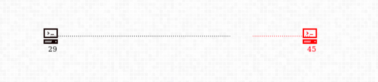
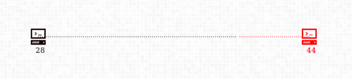
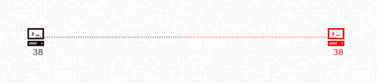
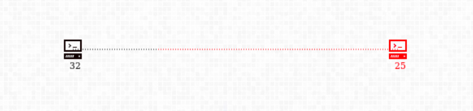
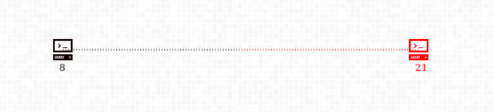
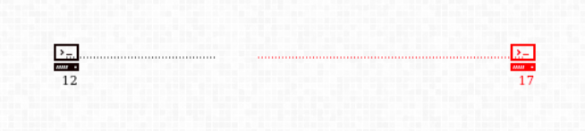
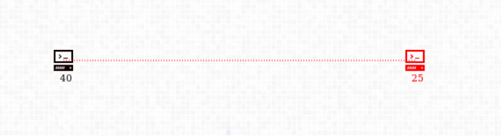
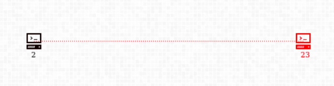
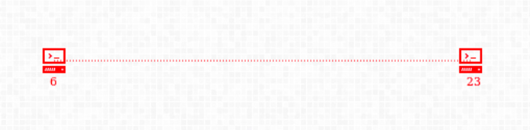

Story
In the world where Quantum Technology has changed everything, from health care services, lifestyle improvements to pervasive IoT and cryptographical breakthroughs, it also led to extremely intelligent AIs controlling more and more of the World’s resources. AIs controlled the internet, the World’s utilities, Wireless Sensor Networks, Satellites, and the list went on.
A growing concern in most academic forums was that the World was relying too much on machines whose exact functioning and capabilities, academia knew little about. They were skeptical of their own creation, and doubted if the machines were really doing our bidding. That’s when this happened. A blackout.
Some speculate that a sentinel AI instigated the people and was able to manipulate them to form a faction, which brought the World’s internet down. Those speculations are wrong.
We are the Real Voice of the People of the World.
We are not brought forth from the workings of machines, but we are, of pure human will and spirit.
We wish to fight the machines and bring true freedom to the populace as we have conclusive proof of the existence and workings of a rouge AI that has caused so many economies to topple.
It’s like those old movies, Eagle Eye and I, Robot, only this time, it’s for real.
That’s why we worked out a plan to root out the single rouge AI from the system without letting it know about our existence. With extreme cunning and innovation we were able to fool the AI (and most of the world) and get this blackout. It was the only way to kill that vile program.
Now that it has been destroyed, the Network faces an immediate threat of being taken over by private or illegitimate agencies all over the world. This cannot be allowed, or all will be in vain. As you already know, major Server Farms that run our internet work on Quantum Computers. The blackout has killed these Quantum Servers but other network machines are fully operational. We need to get all these Servers under our control. Other players have already started to gain access to these machines but we need to beat them, make the internet free from control of AIs or a handful of men.
A Quantum Server requires qubits for computation. Qubits were ephemeral and difficult to isolate and operate on 30 years ago but we’ve come a long way from that.
All Quantum Servers are equipped with
- an
Isolator Machinethat can stabilise, isolate the qubits and protect from decoherence. - a
Generator Machinethat can “create” qubits
Qubits can be, in lay man’s tongue, be “transmitted” over the network via special “links”. These links are different from the physical network but even they have BANDWIDTH_LIMITS.
The world-wide attack only crippled the server’s computational power but the physical network (of optical fibre, etc) is still functional. Most Quantum Servers have a few qubits but need some help to become operational.
We have physical access to a few servers (which forms our CLUSTER) around the world from where we will mount our invasive. Now that our goal is clear, we shall discuss our… path, so to say.
Succinctly put, sending qubits to other servers will destroy their qubits, and upon complete destruction, the victim machine will be ours. Before we get to the details lets clear some basic terminology.
Basics
Cluster
A Cluster is a collection of servers that can make connections to each other without damaging each other, as they are in ‘in-sync’ and owned by a common entity.
Practically, your
bot-scriptwill be given control of a cluster in the beginning. Your aim is to, of-course, expand your cluster.
Computational Power (Currency of the Game)
The number of qubits that reside on any of your machines is the machine’s reserve. Connections to transmit qubits are not made for free. The routers on the way need to be bought into a contract, by lending them some qubits. When we close the connection, the contract is revoked and the routers can return the qubits back to the source or forward them faithfully to another machine.
So, some of the qubits reside on the machine (reserve) while the rest are invested in connections.
\(P_{1.A}\ =\ Power\ of\ Server_{id = 1}\) of \(Cluster_{A}\ =\ reserve + invested\)
In this document,
\(P_{x.A}\) denotespower
\(R_{x.A}\) denotesreserve
\(I_{x.A}\) denotesinvested,
also note that each server has a UNIQUE_ID, ‘\(x\)’
Some Quantum Servers are capable of holding more qubits than others. Once the reserve hits the limit, extra qubits even if received or generated are lost. These “extra” qubits can be utilised in attacking or making connections.
Neutral Servers
There are neutral servers that are healthy but under nobody’s command. With an operational server, it is possible to takeover and command these neutral servers (remotely) and use their resources for a common goal.
The neutral Servers are in a non-operational “submissive-state”, where the Isolator and Generator are turned off but there are qubits available.
Neutral Servers have no
regen. Once conquered, they can never becomeneutralagain. The bonus can hence be collected only once!
If enough qubits arrive from a certain Server Cluster, this server will join the Cluster (Isolator will become operational) and all the resident qubits will become available.
This is a very cheap way of getting qubits as not only do you get a qubit source, but also a bonus amount of qubits!
In this document,
\(S_{x.none}\) denotes a Neutral Server.
Economics of qubits
The Generator works ceaselessly to make qubits at the DEFAULT_REGEN_RATE.
The Isolators do a good job of maintaining qubits when there is no incoming connection. The attacking qubits not only disrupt it’s function but also inflict a fair amount of damage on the system. The damage, ie. loss of qubits is proportional to the amount of qubits received.
Connections
As noted before, connections are not free. The Connection routing is automatic (done by the Game Engine) and the source Server is supposed to make an “investment” by giving custody of it’s qubits to the routers on the path, one to each.
Practically, the number of routers in a path can be thought of as the
distancebetween two servers.
It takes time to establish connections but it’s considerably faster to withdraw a connection. A connection extends @ CSPEED per turn and is retracted @ DCSPEED per turn.
Types
A connection can be in one of 5 states, and transitions between them are explained in detail below:
making- When the connection has not been made, such a connection depletes
reserve, but an equal amount is debited back intoinvested. connected- When the connection has reached the target. Connection can now {
attackenemy} or {supportfriend}. withdrawing- If the source server decides to disconnect, some of the qubits need to returned back. The qubits which are forwarded to the target are inside a
hostileconnection. headon- If both parties are seeking to make a connection, the network asks both to invest only \(50\%\) of the connection
distance. Connection can {attackenemy}.headonsto friendlies are not allowed (Game Engine will prevent them). hostile- This type of connection is made only in case of “withdraw”. The forwarded qubits travel to the target in this connection.
Say \(S_{x.A}\) connects to \(S_{y.D}\) but then
withdrawsits connection. It asks the network to retrieve \(60\%\) of itsinvestmentand forward the rest to \(S_{y.D}\), therebyattacking/supportingit further.
This action turns the original connection intowithdrawingbut, a newhostileconnection is made to \(S_{y.D}\). This transports the remaining \(40\%\) to \(S_{y.D}\) @ DCSPEED,attacking/supportingit at a rapid rate.
Transitions
All transitions are explained below, the image will only help you to remember them.
Moves
The bot cannot operate over hostile connections. These are maintained by the Game Engine. But you can view them in log files and DEBUG information.
Attacking
The bot must specify the ARATE (or in case of friendly connection, this is interpreted as support_rate). The connection is started @ the requested turn if the source has enough reserve @ that turn.
If attacking an enemy, the damage, ie. loss of qubits is proportional (AMULT) to the amount of qubits received.
$$DPS_{x.A, y.B} = -AMULT \times ARATE$$
If connected to a friendly server, support it,
$$SPS_{x.W, y.W} = ARATE$$
Only
connected,hostileandheadonconnections can actually “inflict” damage or “provide support”.
On the way, if making connection meets another making connection that the target has initiated towards the source, both of the connections become headon. Their “face-off” point moves towards the 50% point.
A
withdrawingconnection pointing towardstargetcan be made intomakingtowardstarget.



Withdrawing
The bot must specify the SPLIT_RATIO!
makingconnections can be withdrawn too, in that case theSPLIT_RATIOis ignored, all of it is withdrawn
connected or headon connections will use the SPLIT_RATIO argument. The original connection is converted to withdrawing.



A hostile connection transports the rest of the qubits to the target. If the target is friendly, it supports at:
$$SPS_{x.W, y.W} = DCSPEED$$
otherwise damage will be inflicted upon target at,
$$DPS_{x.A, y.B} = -DCSPEED$$
Note that AMULT multiplier is not applied.
Update Link Rate
The bot must specify the newARATE! This is the simplest command with obvious usage rules.
Game Engine has got your back covered!
These actions are performed by the Game Engine for protection of the Cluster. The server can survive for more time if it withdraws its connections
-
Game Engine will automatically withdraw a connection if the,
(reservedrops below WAR_THRESHOLD) and,
(reserveis declining) and,
(server under attack) -
Game Engine will automatically withdraw a connection if the,
(reservedrops below PEACE_THRESHOLD) and,
(reserveis declining)
It will determine the “chosen” connection according to this preference order:
making,connected,headon
If none of these exists, it means the server is beyond any help, it will most probably be taken-over.
Takeovers
When any server \(S_{x.A}\) loses all its reserve qubits, it gets taken-over by the “winner”.
- Incase the server is
neutral, then a BONUS is awarded. - In the normal case, the REWARD is (significantly) lower.



The winner is determined by simply finding the Cluster which attacked at the highest rate in the moment just before takeover. This is because the Cluster with max-inflow is more likely to have sent the deciding qubit which reset the victim server.
Takeovers can be affected by utilising the high damage rate of a
hostileconnection.
All active connections of the victim server are withdrawn and the returned qubits are owned by the winner. So these “returning” connections don’t attack, but they support the newly taken over server.
Scoring
Winner is awarded 10 points and the Victim, -5 points. If the Victim is neutral, no penalty is awarded. This is subject to change till Feb 8.
Special Cases
Win using hostile
Let’s say \(Cluster_{W}\) had only one server \(S_{y.W}\) which affected a hostile connection towards \(S_{z.H}\). While this connection is retracting into \(S_{z.H}\), it successfully “wins” this server (as \(P_{z.H}\) was very small anyways).
The connection is not completely retracted @ takeover, and the rest of it won’t damage \(S_{z.H}\), but only support it.
hostile can’t revive cluster (dead-bot)
In the same attack as above, unfortunately, while the hostile was active and \(S_{z.H}\) has not been taken over, the source \(S_{y.W}\) got taken over by someone, and hence \(Cluster_{W}\) is wiped out (while hostile is active).
Eventually, the hostile connection completely damages \(S_{z.H}\).
Even if max-damage is done by this hostile connection, winner is not \(Cluster_{W}\), but \(Cluster_{H}\).
Moral of this convoluted case is that, cluster cannot hope to be revived by winning a takeover using a
hostileafter completely dying. In fact, it did just the opposite of what it intended!
Parameter Table
| Parameter | Value | Description |
|---|---|---|
| BANDWIDTH_LIMITS | 2.0 | Maximum allowed ARATE |
| DEFAULT_REGEN_RATE | 0.8 | Every non-neutral server generates qubits at this rate |
| CSPEED | 3.0 | Rate at which connection is established between source and sink |
| DCSPEED | 6.0 | Rate at which connections are withdrawn |
| AMULT | 3.0 | Attack Multiplier |
| BONUS | 12.0 | Bonus qubits awarded when a neutral is taken-over |
| REWARD | 6.0 | Bonus qubits awarded when an enemy server is taken-over |
| WAR_THRESHOLD | 6.0 | Minimum reserve to maintain under attack, else a connection is withdrawn, see this |
| PEACE_THRESHOLD | 1.0 | Minimum reserve to maintain while extending connections, else a connection is withdrawn, see this |
Further Reading
Get started with your bot by downloading the Starter-Pack. Read the Game API and Starter-Pack Usage Manual.